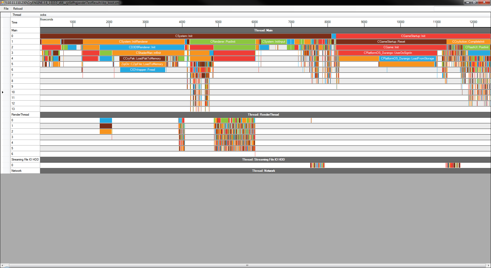

Overview
The bootprofiler is used to profile the time it took for the engine to boot, or to profile the load times of levels. It records automatically every time the engine is started or a level is loaded.

Chapters:
Enabling the Bootprofiler
In the standard SDK, when ENABLE_PROFILING_CODE is defined, then it will also define ENABLE_LOADING_PROFILER. When this is enabled it will record the boot times and level load times every run.
The results are then stored in TestResults. The files are called bp_boot.xml and bp_level.xml.
You can also use the CVar sys_bp_frames to enable profiling for a specified number of frames - the results are stored in a file bp_frame.xml.
Analyzing the Data
In Tools/ProfVis you will find ProfVis.exe, with this tool the data can be analyzed.
Simply drag and drop one of the files from TestResult into the tool, or use the File -> Open and browse to the desired file.
There is also a reload button (at the top) that will refresh the data. This is very useful for example quick iteration, you can run the launcher, shutdown, click reload and instantly see your new results.
Controls: Use Ctrl + Mouse Scroll to zoom in and out, and make sure to only use the horizontal scrollbar at the bottom to navigate left and right.
Understanding the Tool
When the data is loaded it creates a timeline. On the horizontal axis it will display the time in milliseconds, on the vertical axis you will find the threads.
The Bars
The gray bars are the threads with their name written on them. The 0, 1, 2 ... n lines underneath are sort of the layers, these help you to breakdown a function. For example on line 0 you will have a CSystem::Init and on line 1 InitRenderer, PostInit, InitInput.
The last 3 functions are called from inside CSystem::Init. So when you encapsulate profile markers they will create multiple layers to breakdown the functions.

The colors are arbitrary at the moment.
Block Info
You can hover over one of the blocks to get more information.

- totalTime: time this block took in milliseconds
- cursorAbsolute: the time and percentage of the complete loading time of where your mouse cursor is
- args: optional arguments provided through the marker, usually useful for file loads etc
Filter
At the top-right there is a filter. Pressing Enter will mask out anything that doesn't match the filter which makes it easier to find some markers.
Markers in the Code
There are different markers that you can use.
The most basic one is LOADING_TIME_PROFILE_SECTION, this simply marks the function so that it will be profiled.
Then there is LOADING_TIME_PROFILE_SECTION_NAMED, this one allows the programmer to give it a custom name. This can be useful if you are breaking down a function.
Both of the above markers have a variant that takes an argument, these are LOADING_TIME_PROFILE_SECTION_ARGS and LOADING_TIME_PROFILE_SECTION_NAMED_ARGS. They both do the same (as explained before), but they allow a user to send an argument which will show up in the profiler as shown above (argument is a const char*).
These macro's are scope markers, meaning that they measure how much time has passed between their creation and destruction (when they go out of scope), keep this in mind when you use them.
Below is an example of how to take advantage of the scoped markers (take note of the brackets to create scopes):
void Bar()
{
LOADING_TIME_PROFILE_SECTION;
...
}
void Foo()
{
LOADING_TIME_PROFILE_SECTION;
Bar();
{
LOADING_TIME_PROFILE_SECTION_NAMED("Foo - Expensive loop");
while(..) {....}
}
}This results in the following: